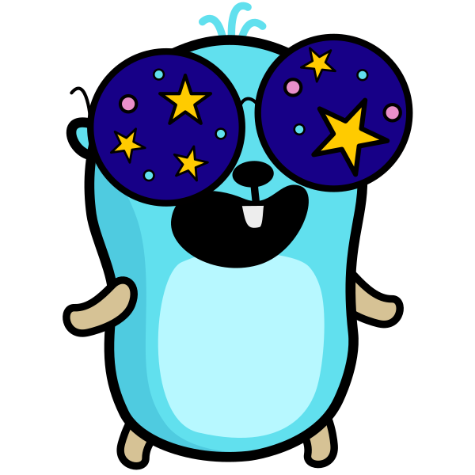

go.mod Lens
See how modules connect. Explore security practices, release freshness, known vulnerabilities, and license evidence.
Search by name or use a public Go module path without https://. Add @version to inspect a specific release.
github.com/spf13/cobra
Gin Web frameworkgithub.com/gin-gonic/gin
gRPC Remote procedure callsgoogle.golang.org/grpc
Once the graph loads, select a node to inspect a module. Switch lenses to explore its evidence.

Module metadata from Go module mirror; OpenSSF Scorecard scores and project metadata from deps.dev; suggestions from GitHub Search.
Contribute